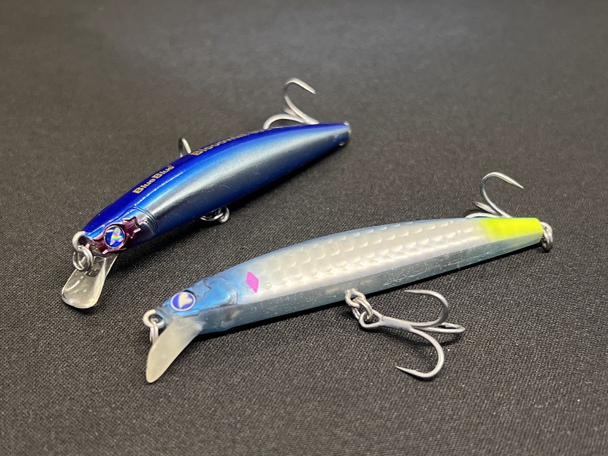
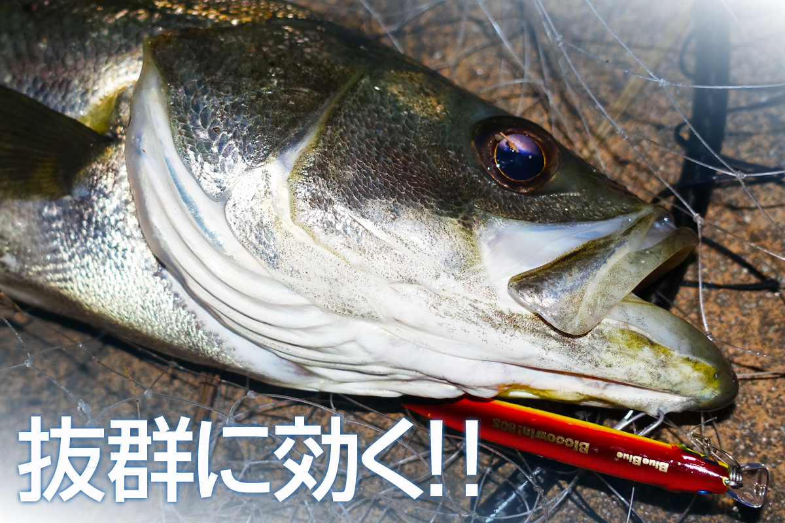
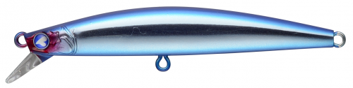
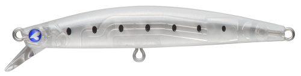
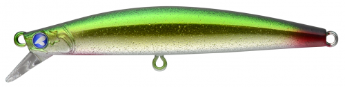
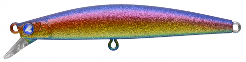

ブローウィン80S(Blooowin! 80S)
ブローウィン80S(Blooowin! 80S)はBlueBlue（ブルーブルー）のシンキングミノーです。
人気シリーズ「ブローウィン」のダウンサイズモデル。タングステンウェイト採用で8gという軽さながら高い飛距離を実現し、スローリトリーブでS字軌道を描きながらウォブンロールするダブルアクションが食い渋ったターゲットを刺激する。シーバスはもちろん、チヌ・キビレ・メッキ・クロソイなど多魚種に対応するオールラウンダーです。

スペック
- メーカー
- BlueBlue（ブルーブルー）
- 長さ
- 80 mm
- 重さ
- 8 g
- フック
- #8×2
- レンジ
- 水面直下〜約100cm
- タイプ
- シンキングミノー
- 沈下タイプ
- シンキング
- アクション
- S字＋ウォブンロール（ダブルアクション）
- ターゲット
- シーバス・チヌ
- 価格
- 1,848円（税込）〜
- 発売日
- 2018年2月27日
▼今すぐチェック

ブローウィン80Sの特徴
小さくても本物——140Sのポテンシャルを80mmに凝縮したシリーズ最小の万能機
-
タングステンウェイトで8gとは思えない飛距離
タングステンウェイトを重心移動機構に組み込むことで、8gの軽量ボディながら横風・向かい風でも安定した飛行姿勢を維持。小型ミノーが苦手な遠投シーンでも届く飛距離を確保している。着水後は必ずロッドを煽ってウェイトを前方に返すことで、水平に近い理想的な泳ぎ出し姿勢をつくれる（これが重要）。
-
S字＋ウォブンロールのダブルアクション
スローリトリーブではS字軌道を緩やかに描きながらナチュラルなウォブンロールを発生させるダブルアクション。シンキング設定ながらサスペンドに近いほどゆっくりとフォールするため、ドリフトや「置いて流す」釣法でも十分なアピール時間を確保できる。早巻きでは細かいピッチのバタバタアクションに変化し、リアクションバイトも狙える。
-
ジャーキングでの横っ飛びダートが威力抜群
ブローウィンシリーズ共通の必殺技、ラインスラッグを作ってからのジャーキングによる横っ飛びダートはスレた魚のスイッチを入れる。80Sのコンパクトなサイズ感はライトタックルでも扱いやすく、小〜中規模河川・港湾の明暗部・橋脚周りでのジャーキングで特に効果を発揮する。
ブローウィン80Sの使い方
基本はタダ巻きとジャーキングの2パターン。タダ巻きではスロー〜ミディアムリトリーブで水面直下〜1mのレンジをS字軌道でトレース。ジャーキングは必ずラインスラッグを作ってからロッドを煽り、ルアーが水を切り裂くように横に走らせる。着水直後にウェイトを返す（ロッドを前に煽る）のを忘れずに——これをやらないと尻下がりの不安定な姿勢になる。チヌ狙いでは水深50cm前後の激浅シャローをスロー〜ミディアムで引くのが基本。
ブローウィン80Sの得意な状況
バチ抜けシーズン（春）のシーバスゲームでフォロールアーとして実績が高い。明暗部・橋脚周り・流れのヨレなど、ドリフトを活かした釣りで本領を発揮する。チヌゲームでは水温が上がる初夏〜秋にかけてシャローエリアで有効で、ボラの跳ねや波紋で存在は分かっているのにトップに出ないチヌを中層で攻略する切り札になる。80mmというサイズはハクやシラス系の小型ベイトパターンにも対応しやすい。
釣れるワンポイント
最重要ポイントは「着水後すぐウェイトを返す」こと。キャスト後にロッドを前に軽く煽ってタングステンウェイトを前方に移動させることで、ルアーがほぼ水平姿勢でゆっくり沈み始める。これをしないとフォール中の姿勢が崩れ、アクションも不安定になる。チニングで使う際はカラーをゴールドサバやアカキン系にすると甲殻類を意識したクロダイへのアピールが増す。スローリトリーブで護岸際を流すだけで「チヌ専用ルアーで釣れた魚」と遜色ない釣果が出ることも多い。

画像出典:ブルーブルー公式HP
人気カラー

#01 ブルーブルー明暗部・ナイトゲームの定番。ささ濁りや白濁した水でも強いメッキホロ系。シーバス・チヌ両用。

#20 シルクイワシ答えが分からない時の万能カラー。イワシ系ベイトが多い状況でオールシーズン対応。

#12 ゴールドサバナイトゲームで高実績のゴールド系。チニングでもアカキン的な使い方で効果的。

#13 房総サンセットブルーブルー限定の房総カラー。夕マヅメに特に強く外房での実績が高い話題カラー。
画像出典:ブルーブルー公式HP
ブローウィン80Sに似ているルアー
- ドーヴァー82s
- サイレントアサシン80s